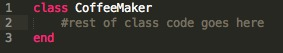
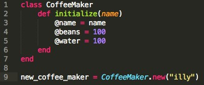
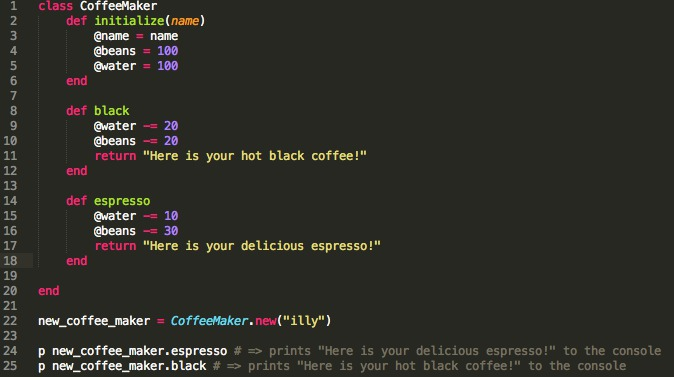
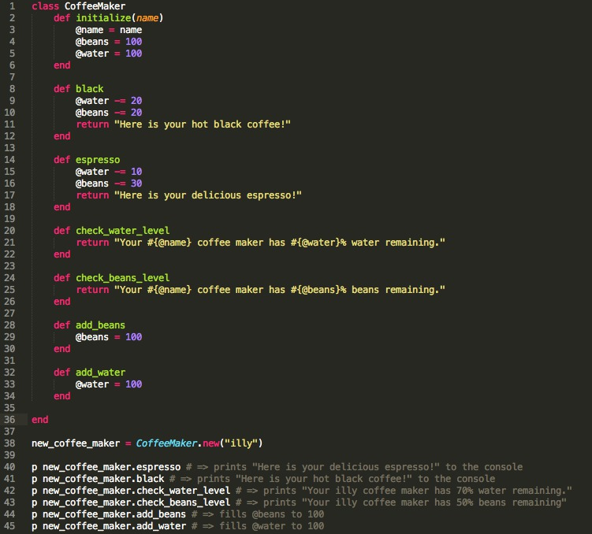

Sebastian Radloff's Blog
Aspiring software developer currently learning Ruby, HTML, CSS, SQL, and Javascript.
Aspiring software developer currently learning Ruby, HTML, CSS, SQL, and Javascript.
Ruby is a great language for many reasons, but an important reason is that every Ruby statement or expression evaluates to an Object. This means that every statement and expression inherits Object properties, which make Ruby such a pleasure to work with!
A class in Ruby is defined as a basic template from which object instances are created, allowing one to represent internal state and behavior methods operating on that state. Basically, we create Ruby classes to model something that has several different behaviors. A real life example I'd like to present to you today is that of a coffee maker.
As you can see, the ruby syntax for a class is relatively simple.
Now let's say our coffee maker needs a few inherent properties such as a name, it's beans level, and water level. These are not behaviors, but properties that a coffee maker has which are needed for later behaviors. These properties are stored as instance variables, meaning instance variables are variables pertaining to a particular object, lasting the complete life of the object.
As you can see the proper way for creating instance variables, is to define an instance method which takes the variables you eventually want as instance variables, as arguments. Here, we take the name of the coffee maker and add it to the instance variable @name. The "@" symbol is used as the notation for an instance variable, and must be placed in the first position of the variable name. We also initialized to other variables, @beans and @water, to equal 100. This is going to represent the percentage of beans and water level throughout the object's life.
What should our coffee maker do? Make coffee of course! Let's say we want to make an espresso or black coffee as our drink options. We will create two methods: one named black and the other named espresso. These methods are instance methods, because they are accessed by an object of the class, and use or work on that object, expressing object behaviors. The black method, will make us black coffee by subtracting 20 from both the @water and @beans instance variables respectively, and return a string which let's us know our delicious coffee is ready. The espresso method, will make us an espresso by subtracting 10 and 30 from the @water and @beans instance variables, and return a string letting us know our espresso is ready. These methods are instance methods, because the object calls them directly using the dot operator.
Now, we make a few drinks and we want to check how much water and beans our coffee maker has left. We built two additional methods, check_water_level and check_beans_level, to return strings telling the user how much of each is remaining. If we see that the water or beans levels are low, we should probably refill them. Therefore, we create two more methods, add_beans and add_water, which fill the water and beans levels back to 100.
We seem to have thought of everything right? We can check how much water and beans there are left, we can add water and beans, and we can even create two drinks. However, we currently do not have anything preventing us from creating drinks if the water and beans levels are below the requirements necessary to make the drink being called. The water and beans level will simply become negative! All we need are two simple conditional statements. The first making sure the coffee maker has enough water and beans to make our drink and the second is the procedure we previously wrote for our drink method.


That's all it takes to create a basic model of a real life object using class, instance variables, and objects.